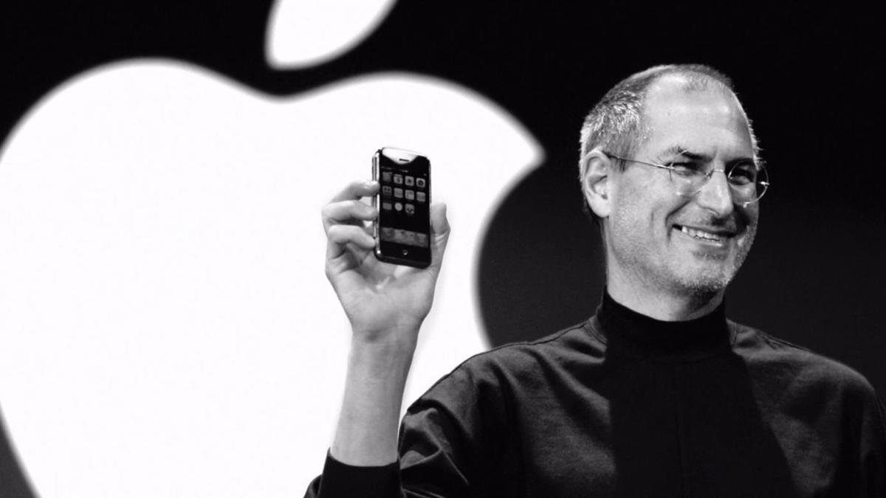
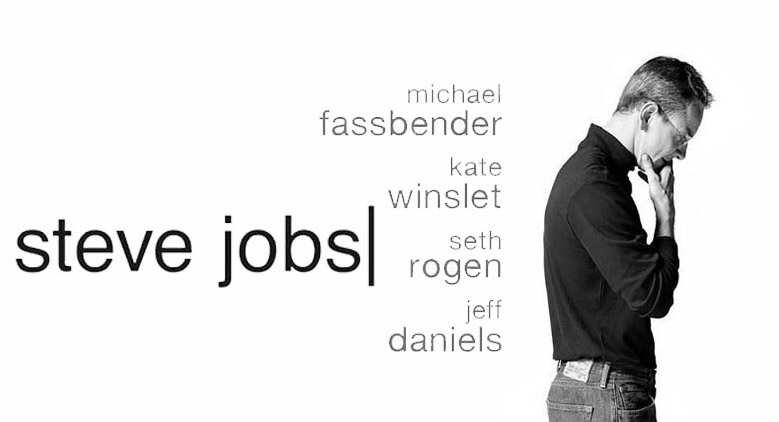

Lisa Brennan Jobs, Eve Jobs, Reed Jobs, Erin Siena Jobs
Formação:
Homestead High School
Steve Jobs é um dos fundadores da Apple. O empresário foiuma das figuras mais revolucionárias do século passado.
A capacidade criativa de Steve Jobs foi fundamental para acapacidade da Apple de obter vantagem competitiva sobre aconcorrência, em grande parte graças ao seu investimento emcomputadores pessoais, quando tal ideia estava se formando.
Suas observações e padrões de uso de tecnologias emergentesnas décadas de 60, 70 e 80 influenciaram diretamente muitosaparelhos modernos, tornando-o uma referência intermediária.
Trajetória Steve Jobs
Steve Jobs nasceu em 24 de fevereiro de 1955, em San Francisco, California e cresceu em Mountain View, California. Ele se formou na Homestead High School em 1972 e frequentou a Universidade da Califórnia, Berkeley, mas deixou o curso logo no início.
Fámilia de Steve Jobs
Steve Jobs tinha uma família complexa. Ele foi criado por seus pais adotivos, Paul e Clara Jobs, e cresceu com uma irmã adotiva, Patricia. Ele também teve um irmão biológico, Mona Simpson, que ele conheceu mais tarde na vida.
Em 1991, Jobs se casou com Laurene Powell Jobs, com quem teve três filhos: Reed, Erin e Eve. A família viveu em um lar próximo ao Vale do Silício, e Jobs foi descrito como um pai amoroso e presente, que encorajou seus filhos a seguir seus interesses e paixões.
Laurene Powell Jobs, além de ser esposa de Jobs, ela é também uma empresária e filantropa. Ela fundou a Fundação Emerson Collective, que se concentra em educação, imigração e questões de justiça social, saúde, meio ambiente e tecnologia. Ela também é membro do conselho de administração de várias organizações, incluindo a Fundação de Educação de Massachusetts e a Universidade de Princeton.
Em geral, Steve Jobs tinha uma relação próxima e amorosa com sua família, e eles continuam tendo grande influência e impacto na comunidade empresarial e de caridade após sua morte.
Formação acadêmica e estudos
Após se formar na escola secundária em 1972, Jobs decidiu não ir para a universidade imediatamente. Em vez disso, ele decidiu viajar pelo mundo e experimentar diferentes culturas. Ele passou algum tempo no Oriente Médio e na Índia, onde ficou fascinado pela filosofia espiritual e pelo design minimalista.
Em 1974, Jobs voltou para os Estados Unidos e começou a frequentar a universidade. Ele matriculou-se na Universidade da Califórnia, Berkeley, mas logo se transferiu para a Universidade de Reed, em Portland, Oregon. Ele passou apenas um semestre na Universidade de Reed e nunca concluiu seus estudos universitários.
Enfim, mesmo sem formação acadêmica tradicional, Steve Jobs era um visionário e inovador, criando empresas e produtos que mudariam a maneira como as pessoas se relacionam com a tecnologia. Sua visão e paixão por design e inovação o levaram ao sucesso e o tornaram um ícone no mundo dos negócios e tecnologia.
Carreira de Jobs

Em 1976, juntamente com Steve Wozniak, ele fundou a Apple Computer (mais tarde conhecida como Apple Inc.) e ajudou a moldar a indústria de computadores pessoais com a introdução do Apple I e do Apple II.
Em 1985, Jobs foi forçado a sair da Apple após uma série de desacordos com o conselho de administração. Ele então fundou a NeXT Inc. e a empresa de animação Pixar.
Jobs também adquiriu a empresa de animação Pixar em 1986, com a qual ele produziu alguns dos maiores sucessos de bilheteria de todos os tempos, como "Toy Story," "Monsters, Inc." e "Finding Nemo." A Pixar se tornou uma das mais bem-sucedidas e inovadoras empresas de animação do mundo e foi vendida para a Disney em 2006 por 7,4 bilhões de dólares.
Em 1996, a Apple comprou a NeXT por 427 milhões de dólares e Steve Jobs retornou à empresa como CEO interino. Ele rapidamente revigorou a empresa e iniciou uma série de lançamentos de produtos que transformaram a Apple em uma das empresas mais valiosas do mundo.
Dentre esses produtos, estão o iMac, um computador pessoal de vanguarda com design moderno e um monitor de tela colorida, o iPod, um dispositivo de música portátil que revolucionou a forma como as pessoas ouvem música, o iPhone, um smartphone inovador e de sucesso que mudou a forma como as pessoas se conectam e se comunicam, e o iPad, uma tableta que revolucionou o mercado de computação.
Filantropia
Steve Jobs não era conhecido por suas contribuições filantrópicas durante sua vida. Ele mantinha sua vida pessoal e suas contribuições caritativas longe dos holofotes públicos, e raramente falava sobre seu envolvimento em causas filantrópicas.
No entanto, Jobs e sua esposa Laurene Powell Jobs, fundaram a Fundação Emerson Collective em 2011, é uma organização sem fins lucrativos que se concentra em educação, imigração e questões de justiça social, saúde, meio ambiente e tecnologia.
Livros de Steve Jobs
Steve Jobs não publicou livros durante sua vida, mas ele é amplamente considerado como um dos visionários mais importantes da história da tecnologia e dos negócios.
O livro "Steve Jobs"
Escrito por Walter Isaacson, é uma biografia autorizada de Steve Jobs, baseada em mais de 40 entrevistas com Jobs, bem como entrevistas com sua família, amigos, colegas de trabalho e rivais. O livro foi lançado em 2011, após a morte de Jobs, e oferece uma visão íntima e detalhada de sua vida e carreira. É considerado como uma das fontes mais precisas e autorizadas sobre a vida e carreira de Steve Jobs.
The Innovators: How a Group of Hackers, Geniuses, and Geeks Created the Digital Revolution
Outra biografia que vale a pena mencionar é “The Innovators: How a Group of Hackers, Geniuses, and Geeks Created the Digital Revolution” escrito por Walter Isaacson. Nela, Jobs é um dos personagens principais. O livro conta a história dos criadores da computação e internet, do início dos anos 40 até aos dias de hoje e apresenta Steve Jobs como uma figura importante na revolução digital.
Outros livros sobre Steve:
"Steve Jobs: discurso de formatura em Stanford" (2005) - Neste livro, Jobs compartilha suas reflexões sobre a vida e a carreira, oferecendo conselhos aos graduandos sobre como seguir seus sonhos e encontrar sua verdadeira paixão.
"iWoz: Computer Geek to Cult Icon" (2006) - escrito por seu amigo e co-fundador da Apple, Steve Wozniak, este livro conta a história da vida e carreira de Wozniak e como ele e Jobs fundaram a Apple.
"Insanely Great: The Life and Times of Macintosh, the Computer that Changed Everything" (1994) - Este livro conta a história do desenvolvimento do Macintosh, o primeiro computador pessoal com interface gráfica de usuário, e como ele mudou a indústria da computação.
Além disso, muitos outros livros foram escritos sobre Steve Jobs e sua influência na tecnologia e nos negócios, incluindo "The Steve Jobs Way: iLeadership for a New Generation" (2011) e "The Idea Man: A Memoir by the Co-founder of Microsoft" (2011)
É importante mencionar também que alguns livros não autorizados, ou não oficiais, também foram escritos sobre ele e a Apple, e esses livros podem conter informações imprecisas ou exageradas sobre a vida e carreira de Steve Jobs.
Filmes, séries e documentários

Existem vários filmes, séries e documentários que retratam a vida e carreira de Steve Jobs. Alguns dos mais notáveis incluem:
"Jobs" (2013) - Este é um filme biográfico estrelado por Ashton Kutcher como Steve Jobs. O filme segue a vida de Jobs desde sua juventude até a fundação da Apple e seu retorno à empresa como CEO.
"Steve Jobs: The Lost Interview" (2012) - Este é um documentário baseado em uma entrevista rara com Steve Jobs em 1995, quando ele ainda não havia retornado à Apple. Ele fala sobre sua visão para a empresa e para a tecnologia.
"Pirates of Silicon Valley" (1999) - Este é um filme para televisão que conta a história da criação e do desenvolvimento da Apple e da Microsoft, e a competição entre as duas empresas. Steve Jobs é interpretado por Noah Wyle.
"Triumph of the Nerds" (1996) - Este é um documentário da PBS que conta a história da revolução da computação e como ela mudou o mundo, e Steve Jobs é um dos personagens centrais.
"Steve Jobs: One Last Thing" (2011) - Este é um documentário da PBS que explora a vida e carreira de Steve Jobs, incluindo sua vida pessoal e sua visão para a tecnologia e os negócios.
"The Man in the Machine" (2015) - é um documentário dirigido e escrito por Alex Gibney sobre a vida e carreira de Steve Jobs. O filme foi exibido no Festival de Cinema de Sundance e trás um retrato diferente de Steve Jobs, mostrando tanto sua grandiosidade quanto suas falhas.
Além desses, também há várias séries, documentários e programas de televisão que tratam sobre a Apple e o impacto da empresa e de Steve Jobs na tecnologia e na cultura popular.
Frases de Steve Jobs
Steve Jobs foi conhecido por suas falas inspiradoras e sua capacidade de comunicar sua visão e paixão pelo design e inovação. Algumas das suas frases mais famosas incluem:
"Aqui está a coisa mais importante que você precisa saber: Tudo é mudável."
"Você não pode conectar os pontos olhando para frente, você só pode conectá-los olhando para trás."
"Se você não está constantemente tentando coisas novas, você fica parado."
"Você não pode construir uma reputação sobre o que você planeja fazer."
"Eu não quero dinheiro. Eu já tenho dinheiro. Eu quero segurança."
"Você tem que encontrar o que você realmente ama. E essa é a única maneira de ser realmente bem-sucedido, ter sucesso no sentido verdadeiro e profundo da palavra."
"As pessoas comuns pensam de maneira ordinária, mas as pessoas incríveis pensam e fazem coisas incríveis."
"Eu prefiro morrer do que mudar o que eu faço."
"O design não é apenas o que parece e se sente. Design é como funciona."
"Se você estiver constantemente se comparando com outras pessoas, você se esquecerá de ser você."